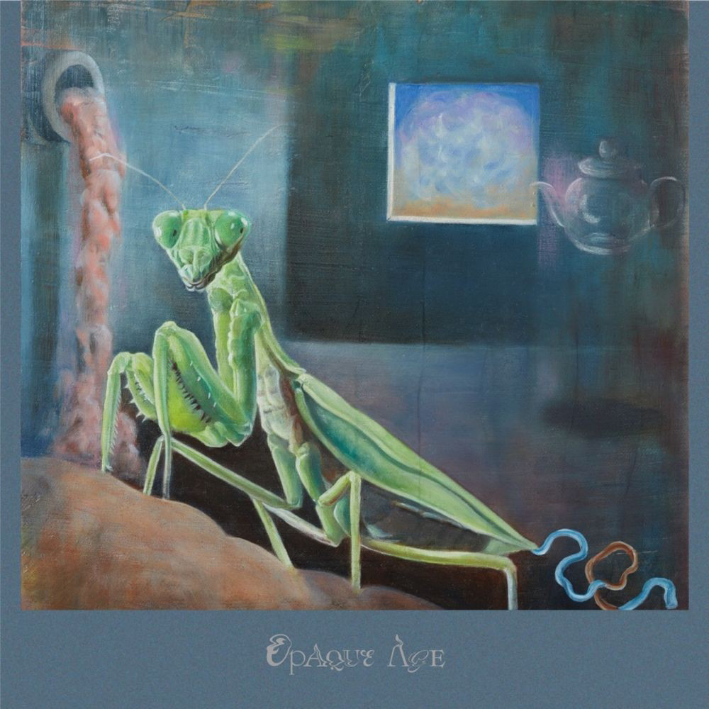

The Hatch - EP.1
- 1. 残念マン
- 2. ひぐちカッター
- 3. エジプトの王は死んだ
- 4. 借り暮らしのビシャモンテ
- 5. oshare!
- 6. 少林寺

The Hatch - $Naomi$
- 1. テキサス・ジェノサイド
- 2. 恐竜は俺の祖先
- 3. ビックマック
- 4. 生まれる前のセクシーキング
- 5. かずきカッター
- 6. Oshare
- 7. テキサス・ジェノサイド −いなり寿司−

The Hatch - OpaqueAge
- 1. hi (overture)
- 2. 恐竜は俺の祖先
- 3. グレープフルーツ
- 4. Stumina Jackson
- 5. REALGOLD
- 6. VEGITA&THE FAMILYSTONE
- 7. SEXGAME
- 8. phantom poop
- 9. CONSTANTINE (Interlude)
- 10. Mme.Bonjasky
- 11. 生まれる前のセクシーキング
- 12. Higuchicutter
- 13. SPACE BATTLE WILL
- 14. 2 AM (stoned)

The Hatch - 穏やかな日々
- 1. 穏やかな日々